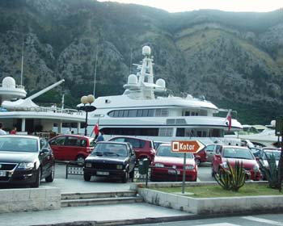

Putovanje - Dva načina
ponedeljek, 18. december 2006. u 10:50 AM
Piše: La Lara
Rubrike: Jahta, more, reka | Knjiga utisaka | Umetnost/Arts
Za vikend sa pročitala preslatku knjigu, Nedelja ujutro. Dešava se između Njujorka i Pariza tridesetih dvadesetih godina, visoko društvo, prohibicija završena, žene žele da izgledaju i imaju frizuru kao Luiz Bruks, u pariskom restoranu sreću Ernesta Hemingveja, pijanog, a kad se sve okolnosti slože, grupa ženski u pratnji jednog muškarca otplovljava iz Amerike u Francusku, da skupe utiske iz Evrope i slože kockice u svojim pričama.
To putovanje se odvija ovako:
"Brod se zvao Pariz i bio je francuski parobrod, a preko Atlantika je plovio još od 1926, od Avra do Njujorka i nazad kao voz koji svaki dan prevozi ljude na posao i s posla, sa svojim dragocenim teretom putnika i imigranata. Prvi razred broda bio je raskošno namešten svilenim kaučima, kristalnim lusterima i obisonskim tepisima. Grand salon imao je zasvođenu tavanicu sastavljenu iz delova, kao kupola, i ogroman kamin s lepo izrezbarenim okvirom, u kome je vatra gorela od šest ujutro do ponoći, borovina i trešnjino drvo."
 To nije sve, naravno.
To nije sve, naravno.
"Na brodu se nalazio i Salon de Conversation, manji od Grand salona, u kome je vladala prijatnija atmosfera, s privilegovanim šankom koji je radio danju i noću, teretana s mašinom za mršavljenje sličnom velikom gumenom obruču koji se stavljao na zadnjicu i tegovima, teren za skvoš, ogroman popločani bazen i jato maserki koje su vam stajale na raspolaganju, biblioteka s knjigama na sedam jezika, prava plesna dvorana u kojoj je svirao dvanestočlani orkestar, francuski kuvar, italijanski kuvar, i glumačka ekipa broda."
***
Nekih sedamdeset osamdeset godina kasnije, prošle nedelje, vozim se trolom, i taman pred izlazak ugledan jedan od utisaka godine, pločicu sa ugraviranim uputstvom:
PRI NEOPHODNOCTI IYLAYA PRITISNUTI TASTER
Razmišljam o tome kroz koliko je ruku ovo ovakvo prošlo, niko ništa nije preduzeo, verovatno je sve uredno i plaćeno, novcem iz BG budžeta, za koji svi dajemo pare, i osećam baš izrazitu neopdnoct iylaya.
 RSS feed
RSS feed
 sadržaji se objavljuju pod
sadržaji se objavljuju pod
Komentari
Zbog tehničkih problema komentari stigli do početka jula 2007. su sada u okviru teksta
Yahti | 07.08.07 09:48